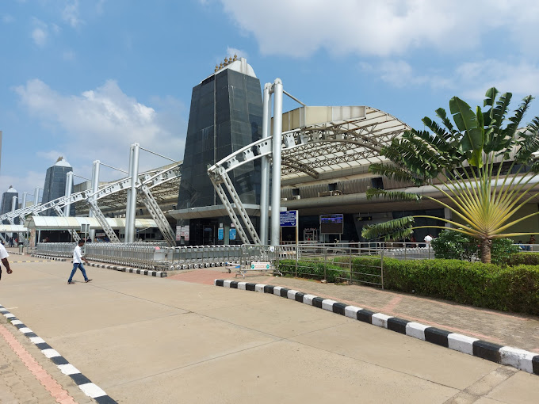

Tiruchirappalli International Airport
Tiruchirappalli International Airport is an international airport serving Tiruchirappalli in the Indian state of Tamil Nadu. The airport spread over an area of 702.02 acres is located on National Highway 336, about 5 km south of the city centre.
